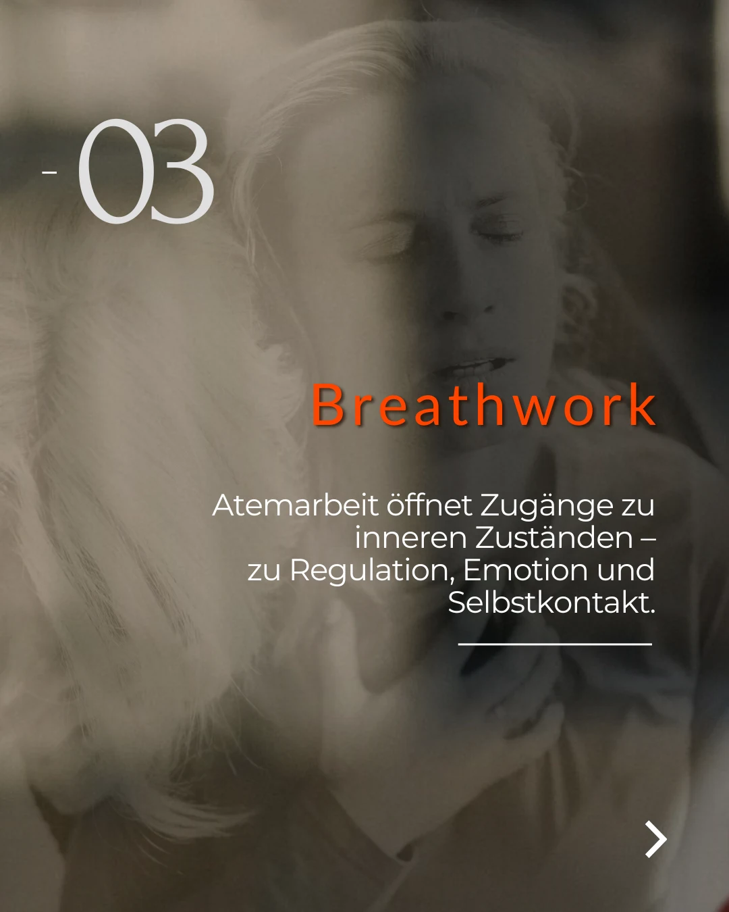

Zielgruppe und Wettbewerb verstehen
Wir betrachten Ihre Kunden, Ihre Branche und bestehende Inhalte. So wird klar, welche Themen relevant sind und wo Sie sich unterscheiden können.
Social-Media-Strategie & Analyse · Für Unternehmen in Deutschland
Eine starke Social-Media-Strategie beginnt mit Ihrem Unternehmen. Gemeinsam klären wir, welche Menschen Sie erreichen möchten, was Ihr Angebot auszeichnet und welche Inhalte Vertrauen aufbauen. Daraus entwickeln wir einen Plan für Instagram, Facebook und weitere passende Kanäle.
Projekt mit Jessica besprechen ↗
Wir betrachten Ihre Kunden, Ihre Branche und bestehende Inhalte. So wird klar, welche Themen relevant sind und wo Sie sich unterscheiden können.
Themen, Formate und Veröffentlichungen erhalten eine klare Struktur – passend zu Ihrem Angebot, Ihren Ressourcen und Ihrem deutschen Zielmarkt.
Reichweite, Interaktionen und Anfragen helfen uns, Inhalte einzuordnen und weiterzuentwickeln. Sie erhalten verständliche Einblicke statt einer Sammlung unkommentierter Zahlen.
Bei mir sind Sie keine Nummer im System. Wir stimmen Ihre Ziele, Inhalte und nächsten Schritte persönlich miteinander ab.
Jetzt Kontakt aufnehmen ↗